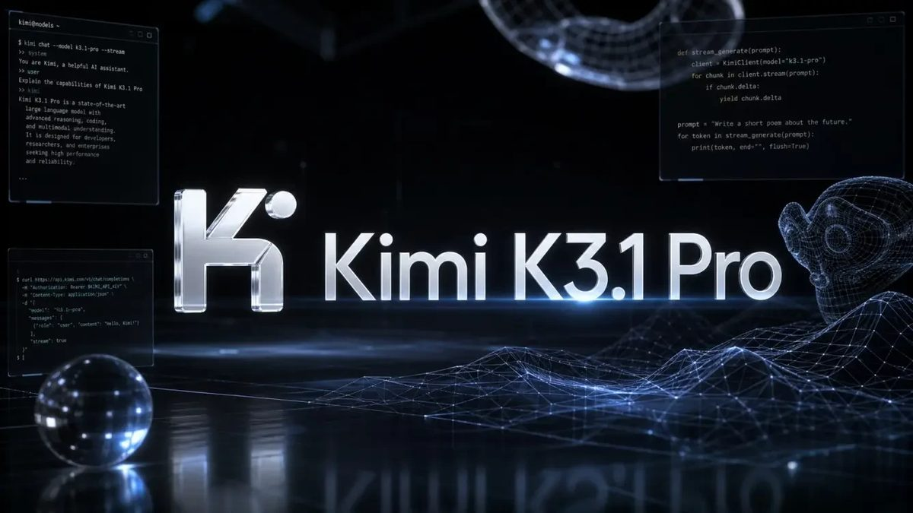
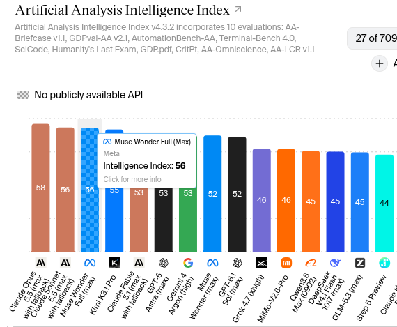
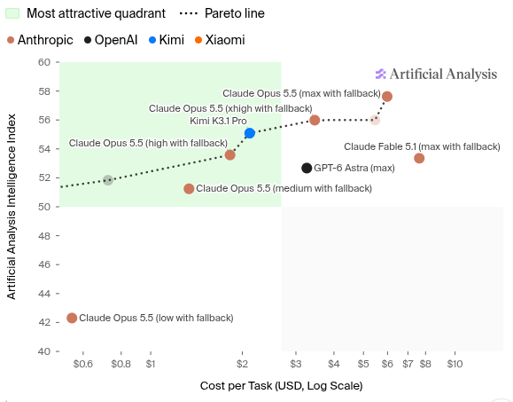

China is back at the frontier: Kimi K3.1 Pro

It feels like it’s been forever since China came out with any new frontier models but here it is; Kimi K3.1 Pro.
The most intelligent model before this which China had produced was Mimo-V2.6-Pro, it sat well behind frontier models, so maybe their compute was slowing enough to negatively impact model development? Maybe China have hit a bottleneck? wrong.
Kimi K3.1 Pro is the frontier, not only is this new Kimi model more intelligent than anything that OpenAI currently publicly provide but it also beats Fable 5.1, it sits at the number 4 spot of most intelligent model while also having open weights.

Kimi K3.1 Pro also runs at just $2.11 per Artificial Analysis Intelligence Index Task compared to GPT Astra Max at $3.26 and at Fable’s $7.63.

Will this exact dynamic last for long? Probably not, models leapfrog over each other every couple of weeks now, it’s still wild to see China in the frontier like this after inactivity for so long.
Is this distillation and trained on frontier models like Opus and Astra? I thought guardrails were meant to be much higher on frontier models.
What happens when you have a local, unrestricted version of a Kimi K3.1 Pro? What happens to cyber attacks which can be performed by anyone and with a more than capable fable level AI to do it? Is it dangerous for a short while? Open weights can’t be taken back once they’re released.